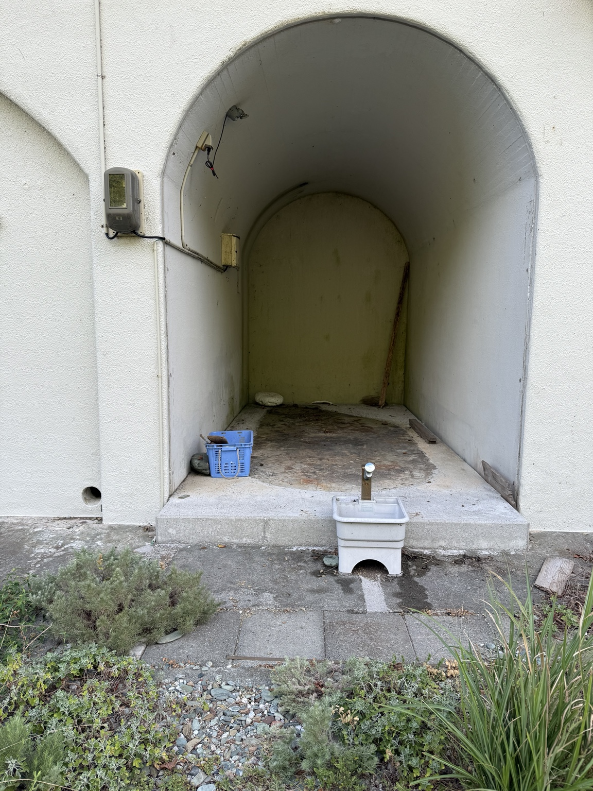

心霊巡り / REAL 3D
SPOT 01 — 海沿いの旧施設
REC
00:00
目的：建物を探す
LIGHT
撮影
調べる
FIELD CAMERA / SPOT 01
現地写真を確認中
A MOBILE REAL-TIME HORROR
心霊巡り
REAL 3D / FIELD NOTE 01
実際に歩いて、場所を探す。
扉の奥へ進んだら、帰り道を覚えておくこと。
探索を開始
左スティック：移動 画面スワイプ：視点
イヤホン・暗い場所でのプレイを推奨
※突然の音・点滅・恐怖演出があります

FIELD NOTE CLOSED
帰還
THE BUILDING REMEMBERED YOU
外へ戻ったはずなのに、
撮影した写真には建物の中のあなたが写っていた。
もう一度探索